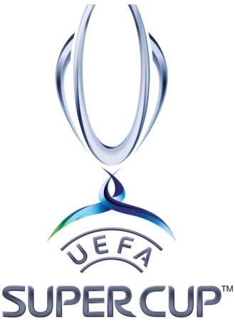

Trofei
Competizioni nazionali
-
Campionato italiano: 19
- 1901
- 1906
- 1907
- 1950-1951
- 1954-1955
- 1956-1957
- 1958-1959
- 1961-1962
- 1967-1968
- 1978-1979
- 1987-1988
- 1991-1992
- 1992-1993
- 1993-1994
- 1995-1996
- 1998-1999
- 2003-2004
- 2010-2011
- 2021-2022
-
Coppa Italia: 5
- 1966-1967
- 1971-1972
- 1972-1973
- 1976-1977
- 2002-2003
-
Supercoppa italiana: 8
- 1988
- 1992
- 1993
- 1994
- 2004
- 2011
- 2016
- 2024
-
Coppa Federale: 1
Competizioni internazionali


-
Coppa dei Campioni/UEFA Champions League: 7
- 1962-1963
- 1968-1969
- 1988-1989
- 1989-1990
- 1993-1994
- 2002-2003
- 2006-2007
-
Coppa delle Coppe: 2
-
Coppa Latina: 2
-
Supercoppa UEFA: 5
-
Coppa Intercontinentale: 3
-
Coppa del mondo per club: 1
Altre competizioni
-
Coppa Mitropa: 1
-
Serie B: 2
Competizioni giovanili
Competizioni nazionali
-
Campionato Primavera: 1
-
Coppa Italia Primavera: 2
-
Campionato Primavera 2: 1
-
Campionato nazionale Dante Berretti: 7
- 1971-1972
- 1981-1982
- 1982-1983
- 1984-1985
- 1989-1990
- 1993-1994
- 2008-2009
-
Campionato Nazionale Under-17: 5
- 1994-1995
- 1995-1996
- 2002-2003
- 2006-2007
- 2010-2011
-
Campionato Nazionale Under-16: 1
-
Campionato Nazionale Under-15: 3
- 1991-1992
- 2009-2010
- 2021-2022
Competizioni internazionali
-
Torneo di Viareggio: 9
- 1949
- 1952
- 1953
- 1957
- 1959
- 1960
- 1999
- 2001
- 2014
-
Blue Stars/FIFA Youth Cup: 2